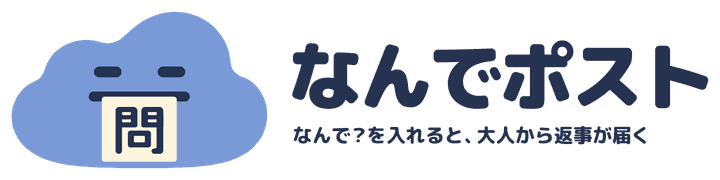

LINE公式アカウントを活用 ／ 地域団体の連絡の仕組みづくり
団体の連絡を、
担当が代わっても
続けられる形に。
お知らせの送り方、月の通数の決め方、引き継ぎの手順書まで。紙・電話・掲示も残しながら、団体の名義で作ります。
- はじめに作る
- 100,000円〜
- 保守（任意）
- 月11,000円〜
税込。LINE公式アカウントの月額とサーバーの利用料は別で、見積書に分けて書きます。いまは相談と見積もりを受けていて、作り始めは2027年1月からの予定です。
子ども食堂・NPO・地区の見守り・ユースの活動のかたへ。
LINE で届く文
トークの下に出すメニューの画像（例）
11月1日（日）・定期のお知らせ
11月の食堂は、14日（土）と28日（土）の17時からです。予約はいりません。紙のお知らせは、公民館の掲示板にも貼っています。
文の例
ISSUESこんな困りごとに
こんなこと、
ありませんか。
受け取る人の側
- 前のお知らせを、あとから見返したい。
- 次の開催日だけ、さっと知りたい。
- LINE を使っていない家もある。
団体の側
- 担当が代わるたびに、操作の説明をやり直している。
- 個人のスマホの LINE で、団体の連絡をしている。
- 月の通数が、無料の枠で足りるかわからない。
上は、よくある困りごとの例文です。実際のお客さんの声ではありません。
SCREENS画面の見本
あいさつ、お知らせ、
打てば届く。
LINE で届く文
友だち追加のとき（あいさつ）
友だち追加ありがとうございます。〇〇こども食堂です。お知らせの受け取り方を、下のボタンから選んでください。
ボタン
月2回のお知らせを受け取る自分で見に来る
文の例
01
受け取り方を選ぶ
友だち追加のあいさつで、お知らせの受け取り方をボタンで選んでもらいます。
LINE で届く文
トークの下に出すメニューの画像（例）
11月1日（日）・定期のお知らせ
11月の食堂は、14日（土）と28日（土）の17時からです。予約はいりません。紙のお知らせは、公民館の掲示板にも貼っています。
文の例
02
決めた日にお知らせ
決めた日に、団体のお知らせを送ります。紙や掲示と同じ中身にできます。
LINE で届く文
お客さんが送る
お知らせ
その返事（応答メッセージ）
いちばん新しいお知らせです。次の食堂は、11月28日（土）17時からです。
文の例
03
「お知らせ」と打てば届く
自分で見に来る人や、上限に来た月でも、「お知らせ」と送ってもらえば、応答メッセージで最新のお知らせを返します。自分で打つ手間はかかります。
スマホの形の画面は、たいどが作るページの見本です。「LINE で届く文」の図は、LINE のトーク画面ではなく、届く文を並べたものです。名前・日付・回数はすべて架空の例で、実際の画面と文は、お店・団体の使い方に合わせて作り、作る途中で一緒に確かめます。
MESSAGES通数の数え方
月に何通いるかを、
先に数える。
LINE公式アカウントの通数は、送った相手の人数で数えます。
100人×月2回＝200通
全員に一斉に送ったときの例
- 100人に月2回、全員へ一斉に送ると、200通です。無料のプランの上限（月200通）にちょうど届きます。
- 受付の知らせなど、一人ずつに送る知らせも、送った人数の分だけ数えます。
- 友だちが送ったメッセージに応答する方式（応答メッセージ）で返す分は数えません。あとから送る知らせは数えるので、配信のしかたと要る通数を、見積もりのときに整理します（Messaging API の料金）。
- 仕組みが送るお知らせには月の上限を決め、それを超えては送りません。無料の枠で足りるか、大事な連絡をどう届けるかを、作る前に一緒に決めます。
OFFLINE紙・電話・掲示
LINE を使わない人にも、
届け方を残す。
紙・電話・掲示を、どこに残すか決める
LINE だけに切り替えることを前提にしません。紙のお知らせ、電話の連絡網、掲示板のどれを残すかを、団体で確かめてから作ります。
同じ中身を、どこからでも
LINE のお知らせと、紙や掲示の中身をそろえられるように、文の型を作ります。
団体の名義で、引き継げる
団体の名義で作り、担当が代わっても同じように回せる手順書をつけて渡します。
個人のスマホから離す
団体の連絡を、担当の個人の LINE から、団体の LINE公式アカウントへ移せます。管理画面には、複数の担当が入れます。
SAFETY子どもや相談の言葉
決めた言葉には、
相談先を先に返す。
子どもや保護者から言葉が届く LINE では、命にかかわる言葉や、いじめを打ち明ける言葉など、決めておいた言葉が届いたときに、相談先の窓口の案内を返す作りにできます。その文は、たいどが作る記録用のデータベースには保存しません。LINE のトーク画面など LINE の側に残る分と、ログ・バックアップに残る範囲は、作る前にお伝えします。
決めた言葉に反応する仕組みなので、見落としや、通信の障害で返せないこともあります。緊急の対応や、いつも見守ることはできず、大人の見守りや相談の窓口の代わりにはなりません。どの窓口を案内するか、大人が読む範囲をどうするかは、団体のみなさんと決めます。
WORKS自分で作った作例
なんでポストで、
確かめた上限と相談先。

なんでポストは、たいどが運営し、仕組みも作った試作の作例です。韮崎の中高生の「なんで？」に、地域の大人が返事を書く場所で、そのサイトと LINE公式アカウントをつないでいます。お客さんに納めた実績ではありません。
確認済みの機能
- 中高生に届ける問いに月の上限（150通）をつけ、超えた分は送らない。トークで「問い」と打てば返事で届く
- 決めておいた言葉（命にかかわる言葉など）が届いたときに、相談先の窓口の案内を返す
- トークで書いたノートが返事の場に出るのは、本人が「みんなに見せる」を押したときだけ
確認の範囲: 本番の LINE公式アカウントで、たいどが試しの端末を使って最後まで通しました（2026年10月）。LINEログインと、作例のプライバシーポリシー・利用規約は公開準備中のため、ログインを使う機能は、まだ一般の人には開いていません。中高生の投稿や個人のことは、ここには載せません。
PROCESS進め方
はじめの30分は、
無料。
01
はじめの30分の相談無料
LINEでメッセージを。オンラインか、韮崎の近くなら会って話します。困りごとと、既製品で足りるかを一緒に見ます。
02
見積もり
作るもの・値段・日程・別にかかる料金を、見積書にしてお出しします。この範囲から増やすときは、作業の前に相談します。
03
作る
LINE公式アカウントは、あなたのお店・団体の名義で用意してもらい、たいどは作業の権限をもらって加わります。データベース・サーバーの契約の名義は、見積書に分けて書きます。途中で、試しの画面を一緒に触ります。
04
渡す
使い方の説明書をつけて渡します。たいどの権限を外すか、保守のあいだだけ残すかも、ここで決めます。
05
保守（任意）月11,000円〜
毎月の動作の確認と通数の見張り、軽い更新を月2件まで。頼むかどうかは選べます。
PRICE値段
はじめに作るのは、
100,000円から。
| はじめに作る | 100,000円〜（税込）。下の「はじめの一式」が「〜から」の中身です。画面やつなぐものが増えると上がります。 |
|---|---|
| 保守（任意） | 月11,000円〜（税込）。月ごとの契約で、最低の期間はありません。やめるときは1か月前までにお知らせください。保守を頼まない場合・やめる場合にも使い続けられる構成と、そのために要る外部サービスの契約・費用を、契約の前にお伝えします（止まったときの直しは、そのつど見積もります）。 |
| 別にかかる料金 | LINE公式アカウントの月額（無料のプランは月200通まで）と、記録をためるサーバーの利用料は、たいどの代金とは別です。あなたから各社へ直接お支払いいただき、見積書にも分けて書きます。韮崎市の外へ伺うときの交通費も別です。 |
| やめたとき | LINE公式アカウントと友だち、あなたの名義のサービスにある記録は、そのまま手元に残ります。何が動き続け、何が止まるか（保守が終わると、不具合や仕様の変更への直しは止まります）と、データの渡し方（CSV など）を、契約の前にお伝えします。 |
| 12か月の試算 | 保守を12か月続けた場合、はじめの100,000円＋保守11,000円×12か月＝232,000円〜（税込）。別にかかる料金は含みません。 |
はじめの一式に入るもの
- 聞き取りと設計（誰に・何を・月に何通送るか、紙や掲示をどう残すか）
- あいさつと受け取り方のボタン、よくある質問
- 月の上限の内で送るお知らせの仕組み
- 決めておいた言葉に相談先を返す仕組み
- 団体の名義の設定の手伝い
- 引き継ぎの手順書
一斉のお知らせや、決まった返事だけで足りる団体には、LINE公式アカウントの標準の機能を使う方法から先にお伝えします。作るのは、それで足りないときだけです。
保守の「軽い更新」の例（月2件まで）
- あいさつや、自動で返す文を変える
- メニューの画像を差し替える
- ボタンの文を変える
- 月の通数の上限の数字を変える
保守に入らないもの（別に見積もります）
- 新しい画面や機能を足す
- ほかのサービスとつなぐ
- LINE側の大きな仕様の変更で、作り直しが要るもの
- 24時間の対応・その日のうちの復旧の約束
実際の値段は、30分の相談のあと、作るもの・値段・日程を見積書でお出しし、書面で契約してから作ります。事業・団体のための仕組みづくりです。助成金などで見積書が要るときは、見積書をお出しします。支払いの時期と方法、提供の予定日、着手の前とあとのキャンセルの条件、保守の終わり方も、契約の前に書面でお示しします。LINE側の仕様が変わったとき、保守でどこまで直すかと、止まったときの受け付けと対応の目安は、契約の前にお伝えします。
FAQよく聞かれること
頼む前に。
LINE を使っていない人には、どう届けますか？
紙・電話・掲示のどれを残すかを、団体で確かめてから作ります。LINE だけに切り替えることを前提にしません。
相談の窓口になってもらえますか？
なりません。たいどが作るのは、相談を受ける専門の窓口へつなぐ仕組みまでです。どの窓口を案内するかは、団体のみなさんと決めます。
協賛のお店を、団体の LINE で紹介できますか？
LINE公式アカウントの利用規約（第18条）では、LINEヤフーの事前の承諾なく、公式アカウントを第三者の広告に使うことはできません。紹介のしかたは、作る前に一緒に確かめます。
どれくらいで使い始められますか？
作る範囲と着手の時期を確かめて、試しの画面を触れる日と、使い始める予定の日を見積書に書きます。審査や設定に日数がかかる作りなら、その期間も分けてお伝えします。いまは相談と見積もりを受けていて、作り始めは2027年1月からの予定です。
いま使っている LINE公式アカウントに、足せますか？
いまの設定と、使っているサービスを確かめてから提案します。ほかの配信ツールや予約サービスとつないでいるときは、その連携への影響と、引き継げるかを先に調べます。Messaging API のチャネルが、すでにほかの会社の名義のプロバイダーにあるときは移せないので、その扱いも先にお伝えします。
LINE公式アカウントは、だれの名義になりますか？
あなたのお店・団体の名義です。LINE のチャネルは、あとから別のプロバイダー（チャネルを持つ事業者の単位）に移せないため、はじめからあなたの名義で作り、たいどは作業の権限をもらって加わります。くわしくは入口のよくある質問に書いています。
効果は約束されますか？
予約の数や売上、友だちの数などの数字は、約束しません。約束するのは、見積書に書いた仕組みを作って、使える形で渡すことです。
止まったときは、どうなりますか？
保守を頼んでいるときは、連絡の受け方と、見るまでの目安を契約に書きます。たいどは一人で動いているので、24時間の見張りや、その日のうちの復旧は約束できません。LINE やサーバーの会社の側の障害は、たいどが直せるものではないので、そう伝えて待ちます。
MAKER作る人
作るのは、
たいどの西村直樹です。
作るのは、個人事業「たいど」の西村直樹です。山梨県韮崎市を拠点に、組織づくり・広告企画と、Web と LINE公式アカウントをつなぐ仕組みづくりをしています。相談から作る・渡す・保守まで、同じ一人が受けます。韮崎・北杜・南アルプスあたりなら、お店や団体に伺って、画面を一緒に触りながら決めます。遠くても、オンラインで。
CONTACT相談する
まず、
30分話す。
まだ作るものが決まっていなくても大丈夫です。「業種・団体の種類」と「いま困っていること」を、LINEで送ってください。30分の無料相談で、既製品で足りるか、作るならどこまで要るかを一緒に整理します。オンラインでも、韮崎の近くなら会ってでも。いまは相談と見積もりを受けていて、作り始めは2027年1月からの予定です。使い始めたい時期があれば、それも書いてください。
送る文の例
「団体の連絡を、担当が代わっても続けられるようにしたいです」
「子ども食堂のお知らせを、LINEでも届けたいです」
友だち追加だけでは、相談の受け付けになりません。追加のあと、ひとことメッセージを送ってください。LINE は新しいタブで開きます。いただいた内容は、返信と相談のご案内にだけ使います（個人情報の扱い）。